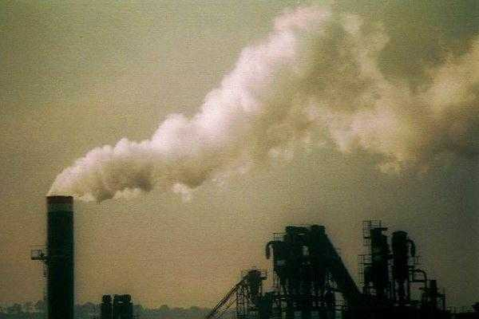
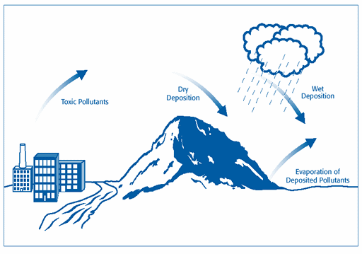
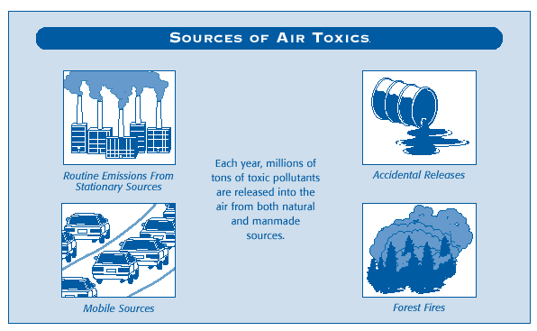

Article # 71
Why should Arkansans be concerned about the quality of their air? What is air pollution and why is it a problem?


Air Pollution
inThe State Of Arkansas

By: Aaron Stapleton, Garrick Ferry, Jimmy Welch, Lina Brown, and Rebecca Cherry
Arkansas Atlas Project
A10: Pollution
By:Rebecca Cherry, Lina Brown, Aaron Stapleton, Garrick Ferry, and Jimmy Welch
Principles of Geography: Geog 1305, Section 2721
March 6, 2001
“Why should Arkansans be concerned about the quality of their air? What is air pollution and why is it a problem?”
Air pollution is a major problem, even in the Natural State. It is defined as any substance that contaminates our air and affects its composition. Polluted air can contain dust and chemicals such as naturally produced carbon monoxide, chimney smoke, and green house gases emitted from car exhaust. When the air is not clean, the entire environment is affected because both plants and animals depend on air to breathe. Trees, lakes, and animals have been harmed by air pollution. Air pollutants have thinned the protective ozone layer, a layer of ozone molecules (O3) in the upper atmosphere that screen out ultraviolet (UV) rays from the sun. This loss of ozone could cause changes in the environment.(2) Air pollution has many harmful effects on humans as well. It can cause burning in the eyes and nose and an irritated throat. Some chemicals found in polluted air cause cancer, birth defects, brain and nerve damage and long-term injury to the lungs and breathing passages. Also air pollution can damage property. Some common pollutants eat away stone, damaging buildings, monuments and statues. Overall, air pollution is a major issue that effects the world in many ways.
It is important for us to understand that unlike other types of pollution, air pollution is not stopped by political boundaries. To use the old cliché, it is “as free to move about as the wind”. The striking fact is that this is all too true. Pollutants emitted in Arkansas can travel with the wind patterns and jet streams to other locations, corrupting the quality of air “where ever the wind may take it.” The following picture shows how pollutants are transferred from water to land and vice versa. Repeated cycles of transport, deposition, and evaporation can move toxic pollutants very long distances.

The most tangible result of air pollution is the green house effect. The green house effect is a naturally occurring process that aids in heating the Earth's surface and atmosphere. It results from the fact that certain atmospheric gases, such as carbon dioxide and methane, are able to change the energy balance of the planet by being able to absorb long wave radiation from the Earth's surface. But if the gases in this process are over-emitted then the Earth’s temperature could rise to dangerous levels. There are several common types of air pollutants, some more dangerous than others. Here are a few examples of air pollutants in Arkansas that are of concern. 
Ozone (ground-level ozone is the principal component of smog)2
Source - chemical reaction of pollutants; VOCs and NOx
Health Effects - breathing problems, reduced lung function, asthma, irritates eyes, stuffy nose, reduced resistance to colds and other infections, may speed up aging of lung tissue
Environmental Effects - ozone can damage plants and trees; smog can cause reduced visibility
Property Damage - Damages rubber, fabrics, etc.
VOCs* (volatile organic compounds); smog-formers
Source - VOCs are released from burning fuel (gasoline, oil, wood coal, natural gas, etc.), solvents, paints, glues and other products used at work or at home. Cars are an important source of VOCs. VOCs include chemicals such as benzene, toluene, methylene chloride and methyl chloroform
Health Effects - In addition to ozone (smog) effects, many VOCs can cause serious health problems such as cancer and other effects
Environmental Effects - In addition to ozone (smog) effects, some VOCs such as formaldehyde and ethylene may harm plants
* All VOCs contain carbon (C), the basic chemical element found in living beings. Carbon-containing chemicals are called organic. Volatile chemicals escape into the air easily. Many VOCs, such as the chemicals listed in the table, are also hazardous air pollutants, which can cause very serious illnesses. EPA does not list VOCs as criteria air pollutants, but they are included in this list of pollutants because efforts to control smog target VOCs for reduction.
Nitrogen Dioxide (One of the NOx); smog-forming chemical
Source - burning of gasoline, natural gas, coal, oil etc. Cars are an major source of NO2.
Health Effects - lung damage, illnesses of breathing passages and lungs (respiratory system)
Environmental Effects - nitrogen dioxide is an ingredient of acid rain (acid aerosols), which can damage trees and lakes. Acid aerosols can reduce visibility.
Property Damage - acid aerosols can eat away stone used on buildings, statues, monuments, etc.
Carbon Monoxide (CO)
Source - burning of gasoline, natural gas, coal, oil etc.
Health Effects - reduces ability of blood to bring oxygen to body cells and tissues; cells and tissues need oxygen to work. Carbon monoxide may be particularly hazardous to people who have heart or circulatory (blood vessel) problems and people who have damaged lungs or breathing passages.
Particulate Matter (PM-10); (dust, smoke, soot)
Source - burning of wood, diesel and other fuels; industrial plants; agriculture (plowing, burning off fields); unpaved roads
Health Effects - nose and throat irritation, lung damage, bronchitis, early death
Environmental Effects - particulates are the main source of haze that reduces visibility
Property Damage - ashes, soot, smoke, and dust can dirty and discolor structures and other property, including clothes and furniture
Sulfur Dioxide
Source - burning of coal and oil, especially high-sulfur coal from the Eastern United States; industrial processes (paper, metals)
Health Effects - breathing problems, may cause permanent damage to lungs
Environmental Effects - SO2 is an ingredient in acid rain (acid aerosols), which can damage trees and lakes. Acid aerosols can also reduce visibility.
Property Damage - acid aerosols can eat away stone used in buildings, statues, monuments, etc.
Lead
Source - leaded gasoline (being phased out), paint (houses, cars), smelters (metal refineries); manufacture of lead storage batteries
Health Effects - brain and other nervous system damage; children are at special risk. Some lead-containing chemicals cause cancer in animals. Lead causes digestive and other health problems.
Environmental Effects - Lead can harm wildlife. (4)
Methane is another form of air pollutant, and a potent green house gas. The most common cause of methane emission is from animal waste.
There are laws to protect us from these dangerous gases, however. In 1970, an act entitled the Clean Air Act (CAA) was passed to protect and improve air quality in the United States.(3)
“The overall goal of the Clean Air Act Amendments is to reduce the pollutants in our air by 56 billion pounds a year—224 pounds for every man, woman, and child—when the law is fully phased in by the year 2005. The new law builds on the strengths of the Clean Air Acts of 1970 and 1977 and the environmental lessons learned over the last twenty years. As the provisions of the new law are implemented, we will be breathing cleaner air every year.” (5)
One specific case in which the Clean Air Act was violated was in a bakery in San Francisco, California. On September 12, 2000 the Arkansas based Meyer’s Bakery agreed to pay the 3.5 million dollars to settle the charges brought against it. The director of the Environmental Protection Agency (EPA) for the Southwest region said that the reason for taking these precautions is to protect human health and ensure compliance with the Clean Air Act. The bakery was releasing thousands of pounds of chlorofluorocarbons (CFCs) through appliance leaks that had not been repaired. Chlorofluorocarbons are carbon compounds that contain chlorine and fluorine. Some examples of products containing CFCs are hair sprays, paints, foam plastic products, and carburetor and choke sprays, all of which are consumer related. CFCs contribute to the greenhouse effect in the lower atmosphere and then diffuse into the stratosphere where they are broken down by ultraviolet radiation. The bakery was not conducting leak checks and the service records were not completed. They also did not have a replacement plan for the leaking systems. (1)
Another recent case was the lawsuit against Williamette Industries and was the largest penalty ever assessed for factory emissions of air pollution. The fine was $11.2 million, and the company was also required to spend an additional $8 million on environmental projects. The allegation made against Williamette Industries was that it failed to control the amount of air pollution released from its wood product factories in four states. The statement was issued by the EPA and the United States Justice Department. The Attorney General commented that the settlement would improve air quality for thousands of people who live around the factories and prevent them from becoming a health risk to the citizens. (6)
Lately, the government has done a good job on lowering the amount of pollutants that are released into the atmosphere. With more and more cases of mishandling the waste of many products and not controlling the amount of agriculture, the environment itself is heading for a major down fall.
Solving the problems of air pollution is not a simple task. It requires not only the participation of the government but also the consumers. Businesses, communities, and other groups have been working together in an effort to save the atmosphere. These groups are mainly focused on the small things that can help in larger ways. Industries can reduce the amount of the pollution that is being produced by installing more sufficient filters and using fuels that burn cleaner. It is even encouraged for cars to get a regular tune-up so that they will run cleaner and in produce less carbon monoxide. With all of the many solutions that are possible, Arkansas facilities are more prepared for pollution in the air. This is all possible because Arkansas has maintained a more comprehensive permitting program than other states. Some steps are being made to reduce the amount of pollutants in the air but nothing drastic is being made. The Clean Air Act is doing what little it can but it still isn’t stopping the major air problems in Arkansas. A great solution would be to require vehicle inspections on all vehicles. That would lower the amount of carbon monoxide from cars greatly. Consumers should also cut back on the everyday items we use that contain pollutants. We should be concerned about the quality of the air in Arkansas not only for the present population, but for the future. Let’s start ending air pollution now, before it’s too late. Let’s help keep Arkansas air clean!
Citations
1. “Environment.” Environmental News Service. 2 Feb. 2001 http://ens.lycos.com/ens/sep2000/2000L-09-12-09.html.
2. Hill, John. Chemistry and Life. Upper Saddle River, New Jersey, 2000
3. “The Plain English Guide To The Clean Air Act.” The Office Of Air Quality Planning and
Standards. 2 Feb. 2001 http://www.epa.gov/oar/oaqps/peg_caa/pegcaa01.html.
4. “The Plain English Guide To The Clean Air Act.” The Office Of Air Quality Planning and
Standards. 2 Feb. 2001 http://www.epa.gov/oar/oaqps/peg_caa/pegcaa11.html.
5. “What Can You Do to Reduce Air Pollution.” United States Environmental Protection
Agency. 23 Feb. 2001 http://www.epa.gov/oar/epa450.txt.
6. “Willamette Industries Settle Air Pollution Lawsuit.” Business Journal Of Portland. 20 Feb. 2001. http://portland.bcentral.com/portland/stories/2000/07/24/daily7.html.